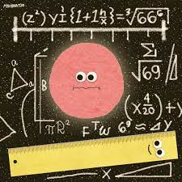

<br>
#### Week 6: Electronic Input Devices
This week was an introduction to Electronic Input Devices.
For this week's assignment, I decided to build something that would help me under how capacitive sensors work. By understanding how capacitive sensors work I can use the same principle and apply them to my Final project. If you want to read more about my final project, <a href="https://kynacode.github.io/PS70/01_intro/week1.html"> click here. </a></li>
<div class="row">
<!-- <div class="col-4">
<p><img src="band.gif" alt="this band moves" width="250" />
</ul> </p>
</div> -->
<div class="col text-center">

</div>
</div>
</div>
I had to first learn how capacitive sensors work in order to be able to program it. I was able to quickly learn how to program it with the help of the website listed below.
<ul>
<li> <a href="https://www.eitkw.com/wp-content/uploads/2020/03/Arduino_Projects_Book.pdf"> Arduino Projects Book </a></li>
<li><a href="https://www.youtube.com/watch?v=fJWR7dBuc18"> Arduino Tutorial 1 </a></li>
<li><a href="https://nathanmelenbrink.github.io/ps70/06_input/index.html "> Electronic Input Devices </a></li>
</ul>
<p> So for this week I first decided to use a photoresistor that detects the absence of light. A photoresistor is a light-sensitive device most often used to indicate the presence or absence of light or to measure the light intensity.
</p>
<h2> Photoresistor</h2>
<div class="container">
<div class="row">
<div class="col-4">
<p>The photoresistor is a unique kind of semiconductor device, and when the light intensity increases around it, the electrons in the valence shell break their bonds and become free electrons, leading to the creation of holes that allow electricity to flow. The resistor's resistance is often generally high when light intensity is low, preventing any current flow.But when the light intensity rises, current begins to flow, which lowers resistance, and this is how the photoresistor functions.
<!--The material I use included:
<ul>
<li>Arduino board </li>
<li>Led </li>
<li>2 220hz Resistor </li>
<li>Photoresistor </li>
<li>Flashlight </li>
<li>Cable cords </li>
</ul> </p>--->
</div>
<div class="col-8 text-center">
</div>
</div>
</div>
To build my circuit I followed the example that was given on our course webpage. However, I changed a couple of things about the setup. I added a Led and program it to light up when the value is over 500. You can see that in my code down below.
Here is my code down below.
<div class="text-sm bg-light" style="height: 500px; overflow-y: auto;border-style: solid;">
<p><pre><code class="language-html">#include <Servo.h>
int res = 0; /* declaring the variable that will store the value of photoresistor*/
int sensor =A0;/* assigning Arduino pin for photoresistor*/
int led= 5;/* assigning Arduino pin for LED*/
unsigned long previousMillis = 0;
int DataTime = 1000;
void setup() {
Serial.begin(9600); /*setting the baud rate for serial communication*/
pinMode(5, OUTPUT); /* assigning mode to LED pin */
}
void loop()
{
// put your main code here, to run repeatedly:
unsigned long currentMillis = millis();
if((currentMillis - previousMillis) >= DataTime) // time to update
{
res = analogRead(sensor); /* getting the value of photoresistor*/
/* displaying the photoresistor value on serial monitor */
Serial.println(res);
if (res < 500) { /* when the value of sensor is less than 500 */
Serial.println(" Low intensity ");
Serial.println(res);
digitalWrite(led,LOW); /* keep the LED off*/
}
else { //(res < 501) /* otherwise turn the light on */
Serial.println("High Intensity ");
Serial.println(res);
digitalWrite(led,HIGH); /* turn the LED on*/
}
}
}
</code></pre></p>
</div>
<h2> Material</h2>
<div class="container">
<div class="row">
<div class="col-4">
<p>
The material I use included:
<ul>
<li>Arduino board </li>
<li>Led </li>
<li>2 220hz Resistor </li>
<li>Photoresistor </li>
<li>Flashlight </li>
<li>Cable cords </li>
</ul> </p>
</div>
<div class="col-8 text-center">
</div>
</div>
</div>
## " Measuring distance "
By Shekinah Newson
<video width="500px" height="500px" controls>
<source src="week5vid.mp4" type="video/mp4">
</video>